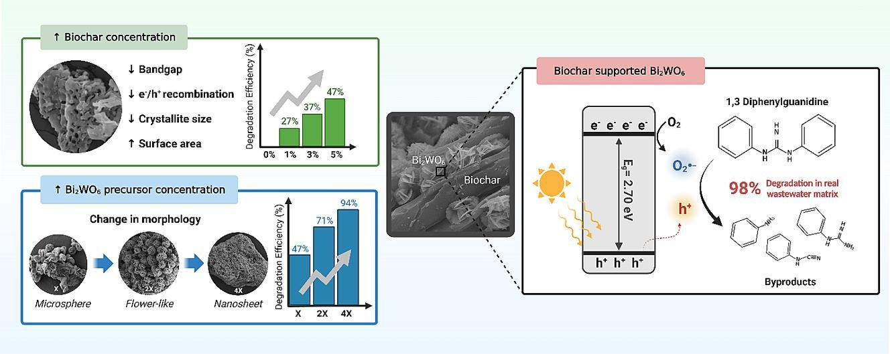
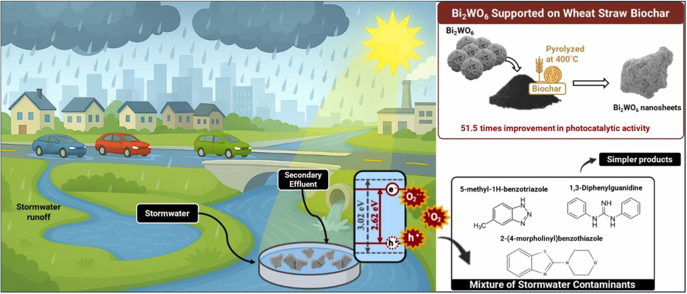
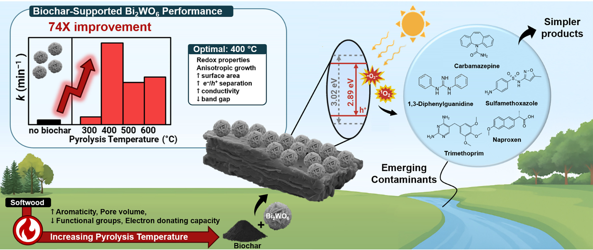
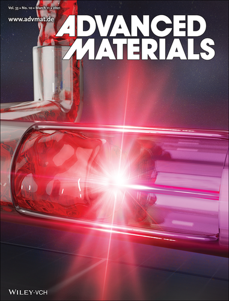

Photocatalysis
Solar- and UV-driven photocatalysis
Development and optimization of solar and UV-driven photocatalyst materials for water and wastewater treatment.
Producing forestry-waste biochar and assessing its application in pilot-scale columns and constructed wetlands. Funded by the Canada First Research Excellence Fund through the Future Energy Systems program.
View project ↗Development and optimization of solar and UV-driven photocatalyst materials for water and wastewater treatment.
Immobilizing photocatalysts on natural support materials to overcome separation challenges of conventional powdered materials. Design of a flow-through UV reactor for the photocatalytic treatment of wastewater.
Synthesis and optimization of biochar derived from forestry residues for oil sands process water treatment.

Chemical Engineering Journal
View project ↗
Journal of Hazardous Materials
View project ↗
Journal of Colloids and Interface Science
View project ↗
Advanced Materials